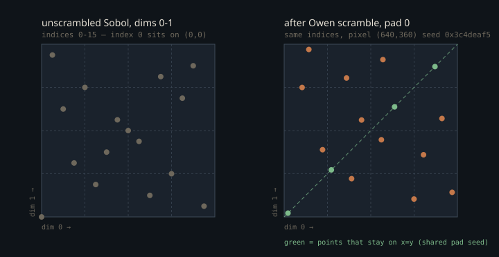

Monograph · Tree · ← Module hub · Sobol + Owen
sampling
Sobol + Owen
Offline low-discrepancy stream.
Four dimensions, and a path that wants forty
The offline tracer needs a stream of uniform numbers per pixel: two for the camera jitter, one to pick a light, two for the light's surface, two more for the next bounce, and on down the path. A low-discrepancy sequence buys convergence closer to $O(N^{-1})$ than white noise's $O(N^{-1/2})$ — but only across the dimensions it stratifies jointly, and OHAO ships exactly four of them.
The direction-number table is four dimensions wide, and both copies of it are labelled Joe-Kuo `new-joe-kuo-6.21201`. Dimension 0 is van der Corput — the identity table $2^{31}, 2^{30}, \dots, 2^0$ — and dimension 1 is the primitive polynomial $x{+}1$ with $m_1 = 1$, which reproduces under the Sobol recurrence for all 32 of its numbers. Dimensions 2 and 3 do not — one of them not at all. The audit is the last movement of this page.
constexpr uint32_t kDirectionNumbers[SobolGenerator::kDimensions * 32] = {ohao/render/rt/sobol_generator.cpp:14A Sobol value is built by direct bit expansion: for sample index $i$ with binary digits $b_j$, the value in dimension $d$ is the XOR of the direction numbers whose bit position is set,
where $v_j^{(d)}$ is the 32-bit direction number for bit $j$ of dimension $d$. That is the whole generator — one XOR per set bit, no Gray-code recurrence, which is what lets a GPU evaluate an arbitrary index with no state from the previous sample.
result ^= OHAO_SOBOL_DIRS[baseOffset + bit];shaders/includes/rt/sampler_sobol.glsl:43Everything past dimension 3 is handled by *padding*: the requested index splits into a pad number and a dimension inside that pad, and each pad gets its own scramble seed so consecutive pads decorrelate.
uint pad = dim >> 2;shaders/includes/rt/sampler_sobol.glsl:69Three raygen shaders include the sampler. `pt_raygen.rgen` is the set `PathTracer` binds by default and `pt_raygen_offline.rgen` is what the offline profile binds; the two consume dimensions in the same order, and the citations here are from the default one. Neither resets its dimension counter along a path, so the pad number climbs monotonically: dims 0–1 go to the camera jitter, and the first NEE block immediately takes dim 2 to select a light and dims 3–4 for the light sample — so the very first light-sampling pair already straddles a pad boundary.
// ==== Analytic direct NEE at bounce 0 ====shaders/rt/pt_raygen.rgen:304const char* raygenSpv{"bin/shaders/rt_pt_raygen.rgen.spv"};ohao/render/rt/path_tracer.hpp:55"bin/shaders/rt_pt_raygen_offline.rgen.spv",ohao/render/rt/rt_profile_renderer.hpp:220Only the pad-local pair (0, 1) is a genuine 2D (0,2)-net. Replaying the shader's arithmetic offline, that pair fills every elementary interval exactly once at N = 16, 64 and 256. None of the other five pairs manages all three sizes: (0,2), (1,2) and (0,3) fail at every size, (2,3) holds only at N = 16, and (1,3) only at N = 64. Joint 2D quality is a property of the direction numbers, and (0,1) — the one pair drawn entirely from the two columns that survive the audit below — is the one pair that holds. The camera jitter gets it; everything deeper gets a stratified-but-not-jointly-perfect projection.
The scramble that has to stay still
Raw Sobol has two problems. Its first point is the origin — every dimension of index 0 is exactly zero — so unrandomised, every pixel's first sample is the same corner of the domain and the whole first accumulation frame is perfectly correlated. And it is deterministic: no variance estimate, and its structure aliases into visible patterns.
Owen scrambling fixes both by permuting the digits of the value. The permutation is measure-preserving (the estimator stays unbiased) and maps dyadic intervals to dyadic intervals (the stratification survives). OHAO uses Burley's 2020 hash-based construction — reverse the bits so the hash acts on the *most* significant digits first, run three XOR-multiply rounds folded with the seed, reverse back. The copy that runs is the GLSL one; `owen_scramble.cpp` is a host twin with no engine caller.
v ^= v * 0x3d20adeau;shaders/includes/rt/sampler_sobol.glsl:21The seed is a Murmur3-style finaliser over the pixel coordinate, XORed with the golden-ratio constant times the pad index.
uint h = pixel.x * 0x1b873593u ^ pixel.y * 0xcc9e2d51u;shaders/includes/rt/sampler_sobol.glsl:51uint seed = _sobol_pixelSeed ^ (pad * 0x9e3779b9u);shaders/includes/rt/sampler_sobol.glsl:71The seed depends on pixel and pad, and deliberately **not** on the sample index — the sample index is the Sobol index instead. {{cite shaders/rt/pt_raygen.rgen "samplerInit(uvec2(pixel), frameIdx);"}} Folding the frame number into the seed is the obvious "more random" choice, and it destroys the entire point: each frame would draw an independently scrambled point with no stratification relative to its predecessors — white noise wearing a Sobol table. Fixing the seed per pixel and advancing only the index makes accumulation progressive, so frame 64 is a genuine 64-point net rather than 64 unrelated draws — but only when the block is $2^m$-aligned. `resetAccumulation()` rewinds the index to `m_renderSeed`, not to zero, and the inverse-rendering session sets a different render seed per view; replaying the arithmetic, a block starting at 1 or at 9973 is not a net at N = 16, 64 or 256. {{cite ohao/render/rt/path_tracer.cpp "m_sampleIndex = m_renderSeed;"}} {{cite ohao/inverse/render_session.hpp@223ff7f "setRenderSeed(seed + static_cast<uint32_t>(viewIndex) * 9973u)"}}

What the shared pad seed costs
The seed is a function of the pad, not of the dimension inside the pad, so all four dimensions of a pad are scrambled by the *same* permutation. Burley's construction assumes a per-dimension seed; here they share one.
Stratification is unharmed — one permutation still maps dyadic intervals to dyadic intervals, so elementary-interval counts are preserved, and replaying the shader confirms the scrambled (0,1) set is a net at every size tested. What is lost is the independence of the two randomisations. The unscrambled (0,1) set is itself symmetric about the diagonal, and one permutation applied to both coordinates keeps it that way: for the four pixel seeds tested the scrambled set stayed mirror-symmetric about $x = y$ at N = 16, 64 and 256. What that costs in image variance is not measured here.
Index 0 is where it bites hardest. `_sobol_int` never enters its loop when the index is zero, so it returns 0 in *every* dimension, and the scramble is a function of the value and the seed alone — so on the first accumulation frame all four dimensions of a pad return the same number, at every pixel. Replaying the shader at index 0: pixel (640,360) gets 0.870422 on dims 0–3, (123,456) gets 0.055861, (1919,1079) gets 0.325855. The camera jitter is `getSample2D(0)`, so frame 0's jitter lies exactly on $x = y$ across the whole image — a different offset per pixel, the same offset in both axes.
for (uint bit = 0u; index != 0u; bit++, index >>= 1u) {shaders/includes/rt/sampler_sobol.glsl:41Pixel (0,0) is the degenerate corner of that. The pixel hash maps (0,0) to 0, and an Owen scramble of the value 0 under seed 0 is 0, so its pad-0 dimensions all return exactly 0.0 — the unscrambled origin, with the seed's multiply stage degenerated to a multiply by one. Higher pads still get a nonzero seed there (dims 4–7 return 0.520961), so only the first pad collapses. Solving `x·A ^ y·B == 0` leaves exactly one such pixel in a 1920×1080 frame.
Eight bits thrown away on purpose
The float conversion discards the low byte and scales by $2^{-24}$ rather than dividing the full 32-bit value by $2^{32}$.
return float(scrambled >> 8) * (1.0 / 16777216.0);shaders/includes/rt/sampler_sobol.glsl:75This is not carelessness about the last bits — it buys the half-open interval for free. A 32-bit integer near `0xFFFFFFFF` has more significant bits than a `float` mantissa holds, so round-to-nearest lands on exactly $2^{32}$ and the division returns 1.0. After the shift the value is at most $2^{24}-1$, exactly representable, so the product is strictly below 1. It is not the only way — pbrt keeps all 32 bits and clamps the result to `OneMinusEpsilon`, the largest float below one — but it is the one that costs no instructions.
// cast of values near 0xFFFFFFFF rounds up to exactly 1.0 in IEEE-754.ohao/render/rt/sobol_generator.cpp:75A returned 1.0 would put a consumer that truncates $\lfloor u \cdot n \rfloor$ one index past the end. The raygens do not lean on the sampler for that: every NEE block clamps its light index with `min(selectedLightIdx, lightBuf.lightCount - 1u)` two lines after the divide, three times in `pt_raygen.rgen` alone. What guards the conversion itself is a host regression test, at index $2^{31}$ in dimension 1, whose direction number is `0xFFFFFFFF`.
float v = SobolGenerator::sample1D(2147483648u, 1);tests/renderer/sobol_test.cpp:67The sibling sampler in the same include directory does the thing this one avoids: `getSample1D_pcg` divides the raw 32-bit output by `4294967296.0`. The top 128 outputs round to $2^{32}$ and return exactly 1.0 — and that is the sampler the realtime profile ships.
float getSample1D_pcg(uint dim) {shaders/includes/rt/sampler_pcg.glsl:20Chosen once, at pipeline creation
Which sampler runs is a Vulkan specialization constant, not a uniform: the GLSL dispatch is an `if` over `constant_id = 0` that SPIR-V folds at pipeline creation, so the PCG/Sobol choice costs nothing at runtime.
layout(constant_id = 0) const uint SAMPLER_TYPE = SAMPLER_SOBOL;shaders/includes/rt/sampler_api.glsl:16uint32_t samplerTypeVal = static_cast<uint32_t>(m_renderSettings.samplerType);ohao/render/rt/path_tracer_pipeline.cpp:80The offline profile selects Sobol; the realtime profile stays on the older PCG sampler, where per-frame temporal reuse and a denoiser matter more than per-pixel stratification.
.samplerType = SamplerType::Sobol,ohao/render/rt/rt_settings.hpp:59The sharp edge: `PathTracer::createRTPipeline()` runs once, from `init()`, and `setRenderSettings()` only reallocates images when the render resolution changes. Assigning a different `samplerType` after init changes the struct and nothing else — the SPIR-V still carries the old constant.
`pt_raygen_realtime.rgen` is the only raygen that loops several samples inside a frame. Each iteration re-seeds with `frameIdx * samplesPerFrame + s` and rewinds the dimension counter to 2, past the per-frame camera jitter consumed before the loop. On the shipped realtime profile the sampler is PCG, which ignores `dim` entirely, so what the re-seed advances there is a PCG stream, not the Sobol sequence; the rewind only starts to matter if that profile is switched to Sobol. `pt_raygen.rgen` and `pt_raygen_offline.rgen` call `samplerInit` once and rely on frame accumulation.
samplerInit(uvec2(pixel), frameIdx * samplesPerFrame + s);shaders/rt/pt_raygen_realtime.rgen:385dimIdx = 2u;shaders/rt/pt_raygen_realtime.rgen:386Two copies of one table, and nothing that checks them
The 128 direction numbers exist twice: a `constexpr` array in the CPU reference, and a `const uint[128]` compiled into each raygen module that includes the sampler — `pt_raygen`, `pt_raygen_offline` and `pt_raygen_realtime`, but not `rt_gi.rgen` or `rt_shadow.rgen`, which pull only `encoding.glsl` and carry no copy. There is no descriptor binding and no upload; the 512 bytes ride in the SPIR-V.
const uint OHAO_SOBOL_DIRS[128] = uint[128](shaders/includes/rt/sampler_sobol_tables.glsl:10The GLSL header carries a byte-for-byte sync requirement in a comment.
// MUST match ohao/render/rt/sobol_generator.cpp::kDirectionNumbers byte-for-byte.shaders/includes/rt/sampler_sobol_tables.glsl:5Nothing enforces it. `SobolGenerator` exposes an accessor whose stated purpose is emitting the GLSL table, and no code in the tree calls it — the shader copy was written by hand.
static const uint32_t* directionNumbers();ohao/render/rt/sobol_generator.hpp:28`sobol_generator.cpp` and `owen_scramble.cpp` are pulled into `ohao_renderer` by the source glob but have no engine caller; `sobol_test` is the only one. Exactly one of its tests checks against numbers from outside the tree, and it covers dimensions 0 and 1. The dim-2 and dim-3 tests state in their own comments that their references were computed from the direction numbers under test, so they pass for whatever the table happens to hold; the rest exercise the scramble's determinism and bit-mixing. All of it is host-side — nothing in-tree runs the GLSL and compares it to the reference, so "mirrors the CPU byte-for-byte" is a maintained convention rather than a verified invariant, even though the two copies do agree today. The bit reversals are not even spelled the same way (`__builtin_bswap32` on the host, a shift-and-mask pair in GLSL); only reading them tells you they are equivalent.
TEST(Sobol, First8PointsMatchJoeKuoReference) {tests/renderer/sobol_test.cpp:37// Dim 2 reference values, computed from the dim-2 direction numberstests/renderer/sobol_test.cpp:10Two of the four columns are not Sobol
The initial numbers are recoverable from the table. Direction number $v_{k-1}$ stores $m_k \cdot 2^{\,32-k}$, so $m_k = v_{k-1} \gg (32-k)$. Feeding those back through the Sobol recurrence for a degree-$s$ polynomial with coefficients $a_i$,
regenerates the rest of the column — if the column came from that polynomial. Dimension 1 regenerates for all 32 numbers under $x{+}1$ with $m_1 = 1$, matching its comment. The other two columns do not match theirs.
Dimension 2's comment names $x^2{+}x{+}1$ with $m = \{1, 3\}$, but $v_2$ is `0x40000000`, i.e. $m_2 = 1$. Recovered, the column reads $m = \{1, 1, 7, 5, 19, 47, \dots\}$, and neither admissible start reproduces it: $\{1,1\}$ generates $1, 1, 7, 11$ and $\{1,3\}$ generates $1, 3, 3, 9$. A search over every recurrence of the form above up to degree 8 — all $2^{\,s-1}$ coefficient choices, primitive or not, seeded from the column's own leading values — matches at most $m_1 \dots m_9$ before diverging, and eight of those nine are the seed. That column is not a Sobol dimension from any polynomial in that range.
// Dimension 2: primitive polynomial x^2+x+1, initial m = {1, 3}ohao/render/rt/sobol_generator.cpp:350x80000000u, 0x40000000u, 0xE0000000u, 0x50000000u,ohao/render/rt/sobol_generator.cpp:36Dimension 3's polynomial is right and its comment is wrong the other way: $v_2 =$ `0xC0000000` and $v_3 =$ `0x20000000` give $m = \{1, 3, 1\}$, not the $\{1,1,1\}$ the comment claims. With $\{1,3,1\}$, $x^3{+}x{+}1$ regenerates $m_1$ through $m_{17}$ and then breaks: the recurrence requires $v_{18} =$ `0x51474000` ($m_{18} = 83229$), the table holds `0x51CBC000` ($m_{18} = 83759$). Seventeen of its 32 direction numbers are the ones the polynomial dictates.
// Dimension 3: primitive polynomial x^3+x+1, initial m = {1, 1, 1}ohao/render/rt/sobol_generator.cpp:450x208F8000u, 0x51CBC000u, 0xFBEA2000u, 0x75AD5000u,ohao/render/rt/sobol_generator.cpp:50Two consequences. Dimensions 2 and 3 carry no equidistribution guarantee beyond whatever they happen to have, and every pair that failed the projection test at the top of this page involves one of them. And the two tests that would have caught this are the two that were written from the table instead of from a reference.
Contracts
- The Owen seed must stay independent of the sample index. Adding a frame term degrades the sampler to white noise while still passing every test in `sobol_test`.
- Progressive accumulation is a net only over a $2^m$-aligned block. `resetAccumulation()` rewinds the index to `m_renderSeed`; any nonzero render seed — as the inverse-rendering session sets per view — gives a stratified but non-net block.
- Only four Sobol dimensions exist. Requesting dimension `d` really means pad `d >> 2`, local dim `d & 3`; reordering the raygen's dimension consumption silently re-pairs which quantities share a pad.
- At index 0 every dimension of a pad returns the same value. Any consumer that treats a pad's dims as independent gets a degenerate first accumulation frame.
- `samplerType` is baked into the SPIR-V at `createRTPipeline()`. Changing it on a live `PathTracer` does nothing without a pipeline rebuild.
- Sample values must stay in [0, 1). The `>> 8` before the float multiply is load-bearing; the PCG sampler in the same directory divides by `4294967296.0` and does not hold this.
- The GLSL and C++ tables and scrambles must stay identical, and no test enforces it. Edit one, edit the other — and repairing dimensions 2 and 3 means editing both tables plus the two tests that were derived from them.
Source files
ohao/render/rt/sobol_generator.cppshaders/includes/rt/sampler_sobol.glslshaders/rt/pt_raygen.rgenohao/render/rt/path_tracer.hppohao/render/rt/rt_profile_renderer.hpptests/renderer/sobol_test.cppshaders/includes/rt/sampler_pcg.glslshaders/includes/rt/sampler_api.glslohao/render/rt/path_tracer_pipeline.cppohao/render/rt/rt_settings.hppshaders/rt/pt_raygen_realtime.rgenshaders/includes/rt/sampler_sobol_tables.glslohao/render/rt/sobol_generator.hppohao/render/rt/owen_scramble.cppParent hub for the full pipeline narrative; this page is the file-level design unit. Sitemap · hover glossary terms anywhere.